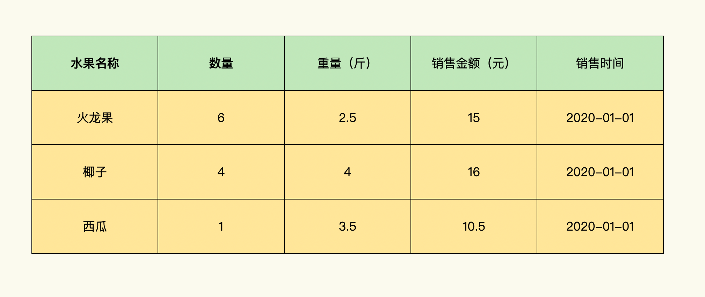

- 00 导读 入门Python的必备知识.md
- 00 开篇词 重复工作这么多，怎样才能提高工作效率？.md
- 01 拆分与合并：如何快速地批量处理内容相似的Excel？.md
- 02 善用Python扩展库：如何批量合并多个文档？.md
- 03 图片转文字：如何提高识别准确率？.md
- 04 函数与字典：如何实现多次替换.md
- 05 图像处理库：如何实现长图拼接？.md
- 06 jieba分词：如何基于感情色彩进行单词数量统计？.md
- 07 快速读写文件：如何实现跨文件的字数统计？.md
- 08 正则表达式：如何提高搜索内容的精确度？.md
- 09 扩展搜索：如何快速找到想要的文件？.md
- 10 按指定顺序给词语排序，提高查找效率.md
- 11 通过程序并行计算，避免CPU资源浪费.md
- 12 文本处理函数：三招解决数据对齐问题.md
- 13 Excel插件：如何扩展Excel的基本功能？.md
- 14 VBA脚本编程：如何扩展Excel，实现文件的批量打印？.md
- 15 PowerShell脚本：如何实现文件批量处理的自动化？.md
- 16 循环与文件目录管理：如何实现文件的批量重命名？.md
- 17 不同操作系统下，如何通过网络同步文件？.md
- 18 http库：如何批量下载在线内容，解放鼠标（上）？.md
- 19 http库：如何批量下载在线内容，解放鼠标（下）？.md
- 20 不同文件混在一起，怎么快速分类？.md
- 21 SQLite文本数据库：如何进行数据管理（上）？.md
- 22 SQLite文本数据库：如何进行数据管理（下）？.md
- 23 怎么用数据透视表更直观地展示汇报成果？.md
- 24 条形、饼状、柱状图最适合用在什么场景下？.md
- 25 图表库：想要生成动态图表，用Echarts就够了.md
- 26 快速提取图片中的色块，模仿一张大师的照片.md
- 27 zipfile压缩库：如何给数据压缩&加密备份？.md
- 28 Celery库：让计算机定时执行任务，解放人力.md
- 29 网络和邮件库：定时收发邮件，减少手动操作.md
- 30 怎么快速把任意文件格式转成PDF，并批量加水印？.md
- 春节特别放送1 实体水果店转线上销售的数据统计问题.md
- 春节特别放送2 用自顶至底的思路解决数据统计问题.md
- 春节特别放送3 揭晓项目作业的答案.md
- 结束语 和我一起成为10X效率职场人.md
因收到Google相关通知，网站将会择期关闭。相关通知内容
春节特别放送1 实体水果店转线上销售的数据统计问题
你好，我是尹会生。今天是大年三十儿，先祝你春节快乐。同时我也要为假期还在坚持学习的你点赞。
春节期间，我为你准备了一个项目作业，帮助你检验第一模块的学习成果。这个作业由3个部分组成，今天，我会介绍项目背景，给出你操作题目，2月13号，我会给出参考思路，在2月16号，我会公布答案。希望你跟着更新节奏，完整地参与进来，巩固你之前的学习成果。
接下来，我先介绍下项目情况。
这个题目来自我身边的一个真实案例。我先给你简单介绍下背景：一家实体水果店上了多多买菜后，店里的销售管理系统都没法直接使用实体店的那一套。而且像多多买菜、美团社群现在都只能下载Excel数据表。
题目是：F水果店由于疫情原因，2020年由实体店改为了线上销售。老板为了进行年终数据统计，需要从在线管理软件下载Excel格式的销售数据，并对销售数据进行处理，分析各个种类的水果受欢迎的程度和库存量，最后录入销售管理系统。不过老板在分析Excel的过程中，遇到了这样一个问题。
将线上的数据转换为线下数据的时候，由于数据不兼容，必须进行统计和一定格式的调整。首先需要合并Excel，统计全年水果销售量。在Excel中，每个sheet记录了当日的销售数据，每个Excel文件记录了当月的销售数据。图表如下：

我给你留两道题目：
- 统计出全年每种水果的总销售额。
- 统计出每月销售数量排名Top 3的水果。
欢迎你在留言区分享你对这道题的想法和思考，我们一起交流、讨论。在2月13日，也就是大年初二这一天，我会把解题思路给你分享出来，供你参考。
© 2019 - 2023 Liangliang Lee. Powered by gin and hexo-theme-book.